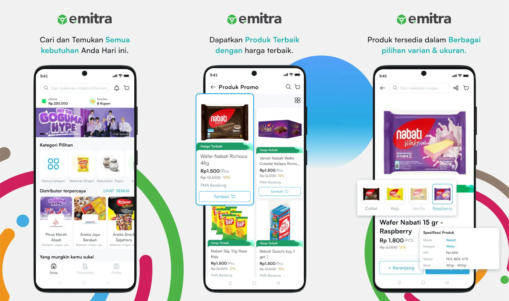
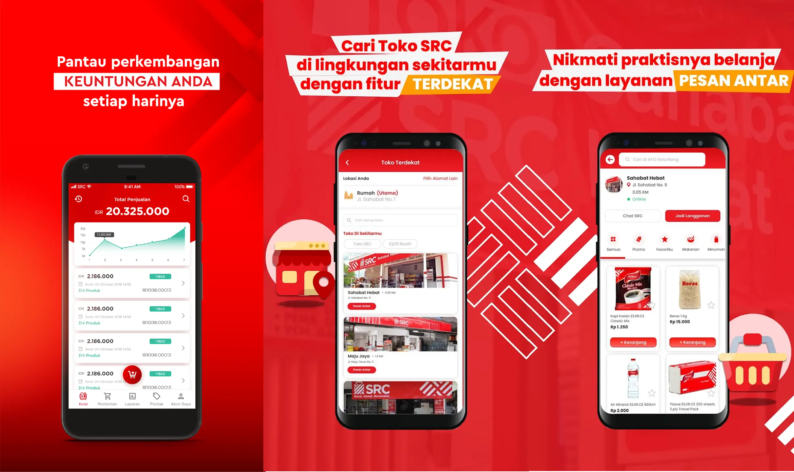
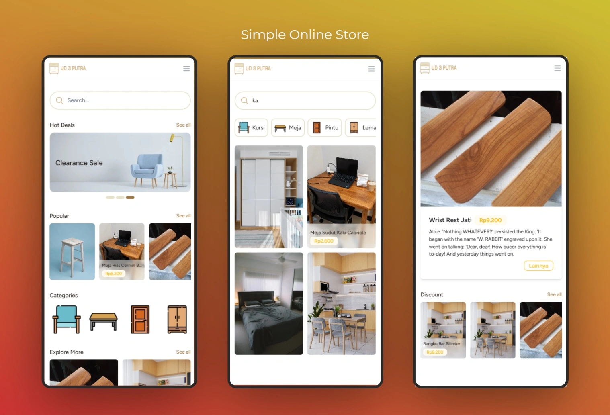
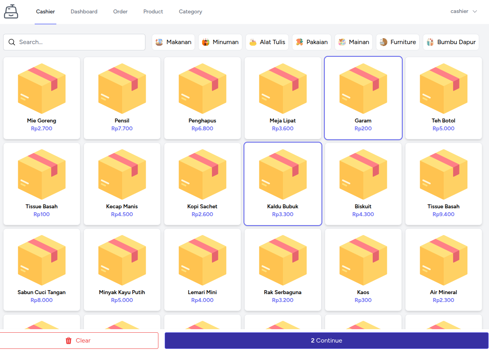
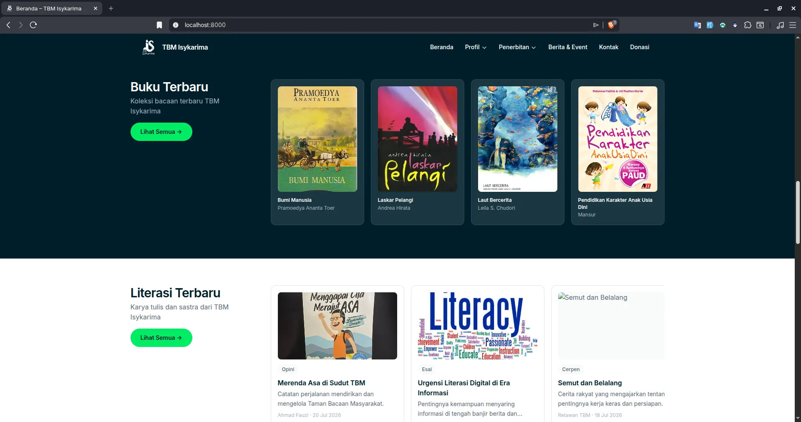

Powerful Backend Engineering
Secure, scalable systems tailored for business-critical operations.
Backend Developer
I build high-performance backend systems and scalable APIs that bridge complex business logic with smooth user experiences.
Available for freelance and collaboration opportunities
From bug fixing to launching complex API architecture, every solution is optimized for performance, security, and long-term growth.
Secure, scalable systems tailored for business-critical operations.
Responsive and modern web experiences that support real business outcomes.
Reliable integration between platforms with secure and efficient API flows.
Tailored systems built around your unique process and product needs.
Refactoring and architecture improvements to speed up APIs and reduce load.
Fast diagnosis and pragmatic fixes for production and development issues.
Projects

Project 01
eDOT/eSHOP is a B2B2C e-commerce application designed to streamline and enhance the FMCG activities between distributors and their network of outlets, extending all the way to end customers.

Project 02
AYO Kasir is a comprehensive digital ecosystem connecting wholesale partners, convenience stores, and customers. I contributed as a backend engineer to modernize store operations and build reliable services for both seller and customer workflows.

Project 03
Lightweight online storefront built with the modern TALL stack (TailwindCSS, Alpine.js, Laravel, and Livewire) to deliver an elegant, responsive shopping experience with a user-friendly admin CMS. I contributed on the backend side to build reliable catalog, content, and inventory workflows for both customer and admin operations.
End User Experience
Admin CMS Capabilities

Project 04
Web-based POS system built with Laravel TALL stack and Jetstream, designed for simple but powerful order and product management with multiuser support in a single store.

Project 05
A simple and extensible Telegram bot written in Go to assist users with nutrition insights, packaging OCR, and healthy-living utilities. Built with clean architecture and modular components for easy deployment and maintenance.

Project 06
A lightweight, high-performance Go web application that proxies YouTube audio streams for mobile-friendly background listening without ads and without storing files on the server.

Project 07
Website TBM Isykarima a community library (Taman Bacaan Masyarakat) profile, book catalog, literation catalog, donation management, and blog platform, managed entirely via Filament CMS. Built for KB-TBM Isykarima Banjaragung as a digital hub for the community's reading and literacy programs.

How a shopping habit, a real frustration, and an AI-assisted weekend turned into a working product I actually use.

Building predictable APIs with Laravel 13's JSON:API resources, Spatie Query Builder, and automatic OpenAPI docs.
A practical experiment in cross-compilation, ARM constraints, and API efficiency.

Why rebuilding in your lab can sharpen architecture instincts and engineering depth.
Using Guzzle concurrent request patterns to reduce latency across service calls.

Applying pessimistic locking to protect transactional consistency in production.
Understand your goals, constraints, and timeline.
A focused technical plan with transparent scope.
Milestones, delivery rhythm, and communication channel setup.
Implementation with regular updates and iterative feedback.
Testing, validation, and refinements before release.
Go-live support and practical post-launch improvements.